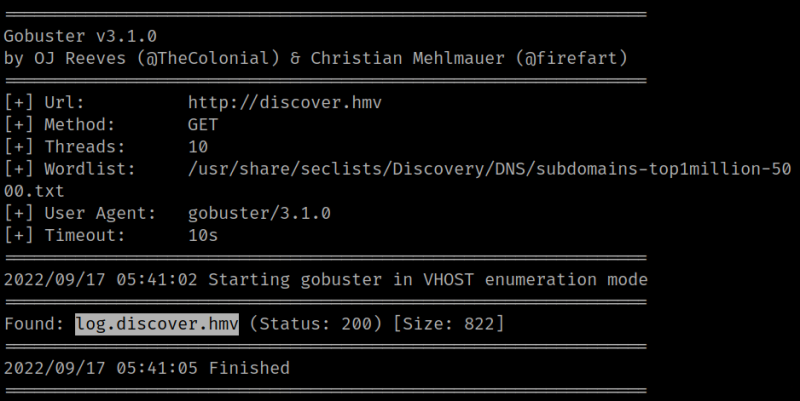
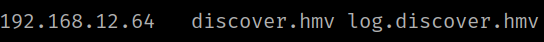

3.1 Gobuster
1. Enumerate files with “gobuster”.
$ gobuster dir -e -w /usr/share/wordlists/dirb/big.txt -x php -t 40 -u http://discover.hmv | tee gobuster_discover.log
The list of files is really big.
2. Enumerate again but this time with the option “vhost” and a “302” response.
$ gobuster vhost -w /usr/share/seclists/Discovery/DNS/subdomains-top1million-5000.txt -u http://discover.hmv | grep -v 302 | tee gobuster_discover.log_vhost
Output:

There's a subdomain called “log.discover.hmv”.
3. On your Kali Machine add it to the “/file/hosts” file.
